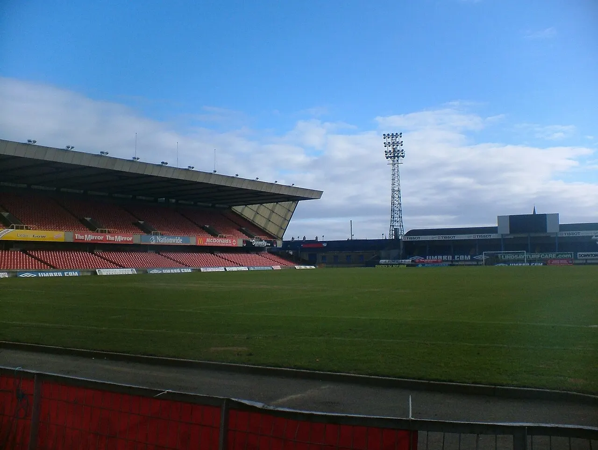

달력은 이미 꽉 찼습니다

클럽월드컵 확대는 축구 산업에 큰 상업 기회를 줍니다. 더 많은 클럽이 참가하고, 대륙 간 맞대결이 늘고, 중계권과 스폰서십도 커질 수 있습니다. 그러나 선수에게는 다른 의미가 있습니다. 시즌이 끝난 뒤 쉬어야 할 시간이 대회로 채워지고, 다음 시즌을 준비할 프리시즌이 짧아집니다.
축구 선수의 몸은 경기 수만으로 설명되지 않습니다. 이동 거리, 시차, 기후, 훈련 강도, 회복 기간, 대표팀 차출이 모두 누적됩니다. 같은 60경기라도 사흘 간격으로 원정이 이어지는 일정과 충분한 휴식이 있는 일정은 완전히 다릅니다. 클럽월드컵 논쟁의 핵심은 경기 수보다 회복의 질입니다.
대회가 커지면 강팀 선수일수록 더 많이 뛰게 됩니다. 리그, 컵대회, 유럽대항전, 대표팀, 클럽월드컵까지 모두 치르는 선수는 시즌의 끝과 시작이 흐려집니다. 흥행이 커질수록 가장 가치 있는 선수의 몸이 가장 많이 소모되는 구조입니다.
부상은 한 경기 뒤에 옵니다
과부하는 경기 중 바로 보이지 않을 때가 많습니다. 근육 피로와 관절 부담은 누적됐다가 방향 전환, 스프린트, 착지 순간에 터집니다. 대형 대회에서는 선수와 구단이 무리해서 출전을 선택하기 쉽고, 그 여파는 다음 시즌 초반에 나타날 수 있습니다.
부상 위험은 개인 선수만의 문제가 아닙니다. 주전이 빠지면 구단의 전술과 성적, 중계 상품성이 함께 영향을 받습니다. 대회의 흥행을 위해 만든 일정이 장기적으로 리그 품질을 떨어뜨릴 수 있습니다. 선수 보호는 비용이 아니라 상품의 지속성을 지키는 조건입니다.
특히 더운 지역과 장거리 이동은 체력 부담을 키웁니다. 경기 시간이 조정되고 냉각 휴식이 있어도 축적된 피로를 완전히 없애지는 못합니다. 의료진과 피지컬 코치의 판단권이 더 커져야 하는 이유입니다.
상금은 모두에게 같지 않습니다
클럽월드컵 상금은 중소 리그 클럽에 큰 기회가 될 수 있습니다. 그러나 비용도 함께 들어갑니다. 장거리 이동, 숙박, 보험, 선수단 운영, 시즌 준비 지연이 따라옵니다. 큰 구단은 선수층으로 버틸 수 있지만 작은 구단은 몇 명의 주전 부상만으로 다음 시즌 전체가 흔들립니다.
흥행 수익이 리그와 선수에게 어떻게 돌아가는지도 중요합니다. 대회가 커져도 선수 보상과 휴식 기준이 그대로라면 부담은 한쪽으로 쏠립니다. 선수노조가 요구하는 최소 휴식일과 경기 수 제한은 감정적 반발이 아니라 산업 구조를 조정하자는 주장에 가깝습니다.
팬 입장에서도 품질이 중요합니다. 유명 클럽이 나오더라도 주전이 빠지고 경기력이 떨어지면 대회의 매력은 줄어듭니다. 대회 확장은 콘텐츠를 늘리는 일이지만, 콘텐츠의 질을 지키는 장치가 함께 있어야 합니다.
새 규칙은 회복에서 시작됩니다
앞으로 필요한 것은 대회 폐지 논쟁보다 일정 설계입니다. 최소 휴식 기간, 프리시즌 보호, 선수별 출전 시간 관리, 장거리 이동 후 회복 기준을 명확히 해야 합니다. 의료 데이터가 구단 안에만 머물지 않고 대회 운영에도 반영돼야 합니다.
선수 교체 확대나 엔트리 확대도 대안이 될 수 있습니다. 다만 그것만으로 문제를 해결하기 어렵습니다. 핵심 선수에게 계속 의존하는 전술과 상업적 압박이 남으면 실제 부하는 줄지 않습니다. 제도와 문화가 함께 바뀌어야 합니다.
클럽월드컵의 성공은 결승전 시청률만으로 판단하기 어렵습니다. 대회 뒤 선수들이 건강하게 리그로 돌아가고, 팬들이 다음 시즌에도 좋은 경기력을 볼 수 있어야 합니다. 축구 산업의 장기 흥행은 일정표의 빈칸을 존중하는 데서 시작됩니다.
관련 영상
Player Workload & Financial Sustainability
클럽월드컵 확대는 세계 축구의 큰 무대가 될 수 있습니다. 그러나 선수의 회복이 빠진 흥행은 오래가기 어렵습니다. 달력 위에서 가장 희소한 자원은 경기장이 아니라 선수의 몸입니다.
클럽월드컵 확대는 흥행보다 선수 부하 관리가 관건을 볼 때는 발표 직후의 반응보다 다음 분기까지 이어지는 숫자를 함께 확인하는 편이 좋습니다. 단기 뉴스는 방향을 빠르게 바꾸지만 실제 변화는 계약, 예산, 생산, 소비 습관처럼 느린 항목에서 굳어집니다. 이 차이를 나누어 보면 과장된 기대와 실제 지속 가능성을 구분할 수 있습니다.
가장 실용적인 점검 방법은 한 가지 지표에 기대지 않는 것입니다. 가격, 수요, 비용, 규제, 실행 시간이 같은 방향으로 움직이는지 확인해야 합니다. 어느 하나만 좋아도 나머지가 따라오지 않으면 결과는 늦어지고, 여러 조건이 동시에 맞으면 변화는 예상보다 빠르게 확산될 수 있습니다.
이 주제는 한 번의 결론보다 관찰 순서가 더 중요합니다. 먼저 현재 병목을 확인하고, 그다음 누가 비용을 부담하는지 보며, 마지막으로 그 부담이 가격이나 행동 변화로 이어지는지 봐야 합니다. 그렇게 읽으면 제목보다 구조가 먼저 보입니다.
클럽월드컵 확대는 흥행보다 선수 부하 관리가 관건을 볼 때는 발표 직후의 반응보다 다음 분기까지 이어지는 숫자를 함께 확인하는 편이 좋습니다. 단기 뉴스는 방향을 빠르게 바꾸지만 실제 변화는 계약, 예산, 생산, 소비 습관처럼 느린 항목에서 굳어집니다. 이 차이를 나누어 보면 과장된 기대와 실제 지속 가능성을 구분할 수 있습니다.
가장 실용적인 점검 방법은 한 가지 지표에 기대지 않는 것입니다. 가격, 수요, 비용, 규제, 실행 시간이 같은 방향으로 움직이는지 확인해야 합니다. 어느 하나만 좋아도 나머지가 따라오지 않으면 결과는 늦어지고, 여러 조건이 동시에 맞으면 변화는 예상보다 빠르게 확산될 수 있습니다.
이 주제는 한 번의 결론보다 관찰 순서가 더 중요합니다. 먼저 현재 병목을 확인하고, 그다음 누가 비용을 부담하는지 보며, 마지막으로 그 부담이 가격이나 행동 변화로 이어지는지 봐야 합니다. 그렇게 읽으면 제목보다 구조가 먼저 보입니다.
클럽월드컵 확대는 흥행보다 선수 부하 관리가 관건을 볼 때는 발표 직후의 반응보다 다음 분기까지 이어지는 숫자를 함께 확인하는 편이 좋습니다. 단기 뉴스는 방향을 빠르게 바꾸지만 실제 변화는 계약, 예산, 생산, 소비 습관처럼 느린 항목에서 굳어집니다. 이 차이를 나누어 보면 과장된 기대와 실제 지속 가능성을 구분할 수 있습니다.
가장 실용적인 점검 방법은 한 가지 지표에 기대지 않는 것입니다. 가격, 수요, 비용, 규제, 실행 시간이 같은 방향으로 움직이는지 확인해야 합니다. 어느 하나만 좋아도 나머지가 따라오지 않으면 결과는 늦어지고, 여러 조건이 동시에 맞으면 변화는 예상보다 빠르게 확산될 수 있습니다.